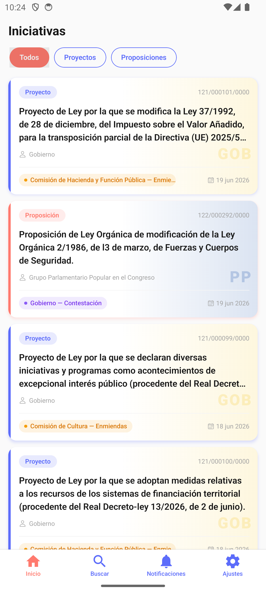
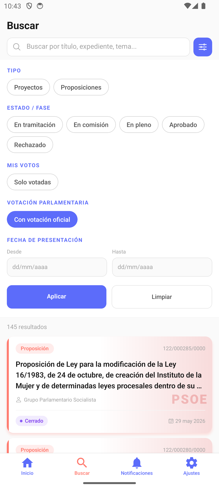
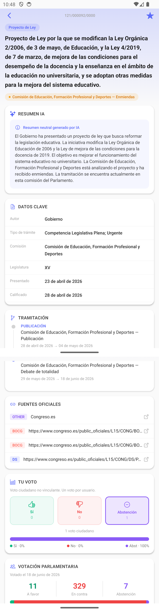
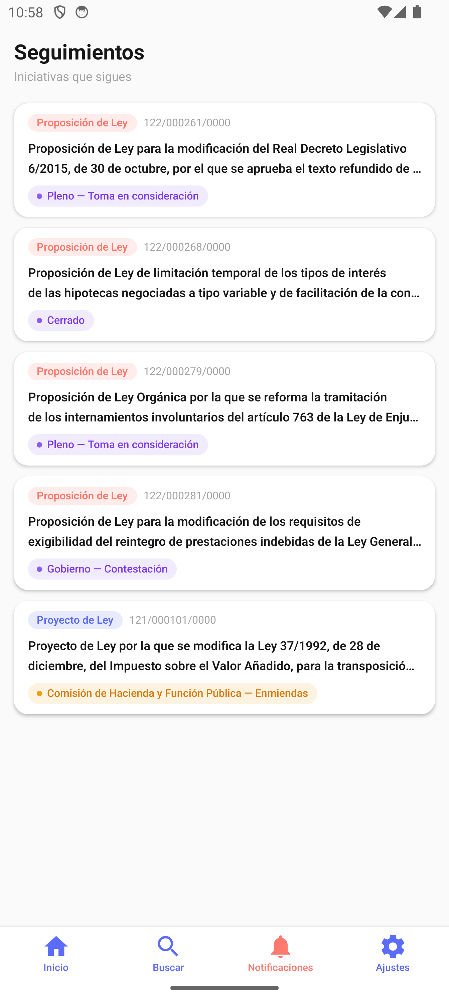
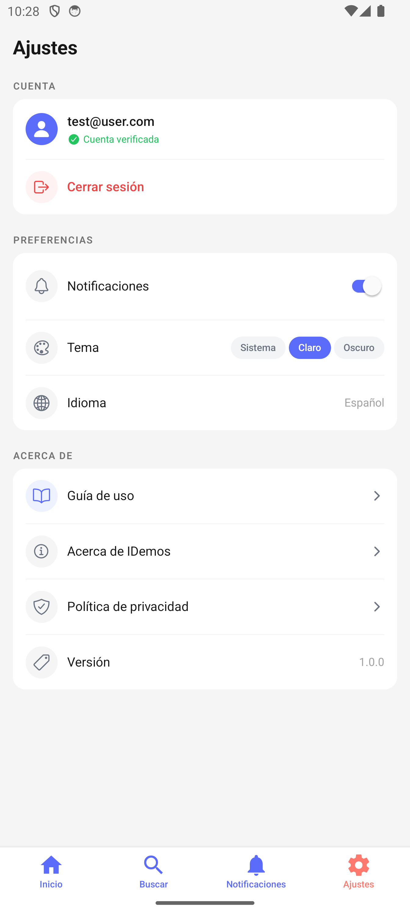

Feed legislativo actualizado
Proyectos y Proposiciones de Ley extraídos directamente de fuentes oficiales del Congreso de los Diputados, ordenados y siempre al día.
Trabajo Final de Grado · Ingeniería Informática
iDemos reúne los Proyectos y Proposiciones de Ley del Congreso de los Diputados, los explica en lenguaje claro y neutral con IA, y te deja votar de forma simbólica para comparar tu opinión con la de tus representantes.
La actividad legislativa española es de acceso público, pero está dispersa en distintas fuentes oficiales, redactada en documentos largos y con lenguaje jurídico poco accesible. El resultado: la mayoría de la ciudadanía solo se informa a través de titulares o resúmenes de terceros, y termina percibiendo la política como algo lejano.
Cada iniciativa vive en un boletín, una web o un PDF distinto del Congreso.
Textos largos y técnicos que pocas personas tienen tiempo o formación para leer.
Sin fuentes claras, la opinión se forma con titulares en vez de con el texto real.
Cuatro piezas que conectan los datos oficiales del Congreso con una experiencia clara para cualquier persona.
Proyectos y Proposiciones de Ley extraídos directamente de fuentes oficiales del Congreso de los Diputados, ordenados y siempre al día.
Cada iniciativa muestra su estado actual, fechas relevantes y enlaces directos a las fuentes oficiales para garantizar trazabilidad.
Un módulo de IA configurado para minimizar lenguaje valorativo y sesgos genera explicaciones breves y comprensibles de cada texto.
Vota sí, no o abstención de forma no vinculante y, cuando hay datos disponibles, compara tu voto con el resultado real en el Congreso.
Prototipo de alta fidelidad construido con React Native y Expo. Diseño Android-first, accesible y centrado en la lectura.





Capturas reales tomadas en emulador Android sobre el build de desarrollo.
Backend desacoplado pensado para escalar la ingesta de datos legislativos y el procesado con IA de forma independiente.
React Native + Expo, NativeWind, TanStack Query, Zustand.
NestJS sobre microservicios, comunicación vía RabbitMQ.
PostgreSQL 16 con migraciones gestionadas por TypeORM.
Contenedores Docker, despliegue continuo en Railway.
iDemos es el Trabajo Final de Grado de Kevin Caballero Cedillo, Grado de Ingeniería Informática (Software) — Desarrollo de aplicaciones para dispositivos móviles, dirigido por Marta Gatnau Sarret. El nombre combina "inteligente" con "dēmos" (pueblo, raíz de "democracia").